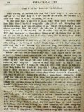

Languages
台文
｜
中文
｜
日本語
｜
English
字體
小
｜
中
｜
大
首頁
/
白話字數位典藏
白話字數位典藏全文檢索
查詢模式
選擇年代
清國時代(1885-1895)
日本時代(1895-1945)
戰後(1945-1969)
1885-1895
1896-1905
1906-1915
1916-1925
1926-1935
1936-1945
1946-1955
1956-1965
1966-1969
1970-1980
1980-1990
1990-2000
2000-2010
2010-
選擇文類
詩
散文
小說
戲劇
傳記
選擇作者
陳清忠
陳清義
編輯部
柯設偕
吳天命
明有德
偕叡廉
周天來
劉華義
王守勇
林茂生
陳添旺
王占魁
柯維思
賴仁聲
陳瓊琚
雪峰逸嵐
吳清鎰
郭水龍
蕭樂善
許水露
葉金木
陳金然
章王由
廖得
鄭連坤
潘道榮
楊士養
梁秀德
劉約翰
周淑慧
高金聲
林燕臣
黃六點
蔡愛義
許有才
主筆
巴克禮
陳鳩水
郭朝成
張基全
陳明清
陳能通
拾穗生
顏振聲
卓恆利
傳道局
胡文池
劉主安
鄭兒玉
潘文才
陳溪圳
徐春生
吳牧師娘
劉牧師娘
郭頂順
楊世註
盧樹河
李水車
Google Search
Yahoo Search
全部
刊名
標題
標題(教羅)
全文
全文(教羅)
作者
第9頁，共13頁(共246筆資料) 0.7286479473114sec
1
...
7
8
9
10
11
...
13
To Page
GO
文字列表
圖文列表
排序
日期
文類
刊名
作者
影像
[1925-7 芥菜子 文類-散文 作者-潘文才/Phoaⁿ Bûn-châi]
(2)
教會Ê牌匾 [ KÀU-HOĒ Ê PÂI-PIÁN ]
教會Ê牌匾 人若看某生理店真鬧熱，真有生理，大趁錢，對按呢ná開ná大間，續成做商行；就kā伊想怎樣會按呢，的確有3項ê因端：(1)物件真，(2)價數實在，(3)頭家好，薪勞盡忠。Koh有某店頭怎樣靜悄悄，無生理，袂趁錢，這ná thang想有3項：
[1925-7 芥菜子 文類-散文 作者-蕭樂善/Siau Lo̍k-siān]
(2)
著贏少年人 [ TIO̍H IÂN SIÀU-LIÂN-LÂNG ]
著贏少年人 濟濟ê少年人不止贊成基督教，也濟濟親像信者，也若毋是nih。Beh引chhōa這款
[1925-10 芥菜子 文類-散文 作者-蕭樂善/Siau Lo̍k-siān]
(3)
用信清氣心肝 [ ĒNG SÌN CHHENG-KHÌ SIM-KOAN ]
用信清氣心肝 用信清氣in ê心。」行傳16: 9 人若講我有信上帝，伊是失敗；若講我無信，彼人是成功。因為信是深沉奧妙；chī-chūi明白，chī-chūi有完全ê信？ 有記載講「清氣心肝ê人有福氣，因為in欲看見上帝。」這句話毋是叫人著出力來予心肝清氣，就是對信上帝來清氣心肝。事先信，後來對信來清氣。這句話真攪擾咱信主ê兄弟kap姊妹。咱信主tio好好，對信就會得著救，ná使著清氣心肝ah！Taⁿ欲看見上帝毋著清氣目睭？設使咱久久來等來ǹg望kiám袂看見mah！無，著對信來清氣心肝，有清氣心肝...
[1925-7 芥菜子 文類-散文 作者-陳溪圳/Tân Khe-chùn]
(4)
毋通長短跤 [ M̄-Thang Tn̂g-Té-Kha ]
毋通長短跤 現時人若講主日學，就想是囡仔，若講佈道，就想是大人；按呢想也果然續按呢teh實行；其實基督ê意思kiám毋是ài主日學大人著在內，佈道囡仔著有份mah (馬太28:19-20.) 主日學kap佈道，形狀kap所做ê工有各樣，若是目的相款，平平是beh chhōa人到基督得著救，不過一爿是宣教的，一爿是教育的，教會若thang比並做身軀，就佈道kap主日學thang講教會ê兩支跤。教會teh求上帝國臨到求人ê得救，卻是對聖神kap恩典，總是彼个機關thang講著對佈道kap主日學，就是宣教k...
[1925-7 芥菜子 文類-散文 作者-徐春生/Chhî Chhun-seng]
(3)
七個災禍（馬太23: 13-36.） [ CHHIT-Ê CHAI-Ē (Má-thài 23: 13-36.) ]
七個災禍（馬太23: 13-36.） 這站ê聖冊是耶穌責備遐个假好ê經學士kap法利賽人。今仔日也是thang做叫醒咱ê精。 佇耶穌ê時代，猶太國有3个教派，1.撒都該，2.伊事年，3.法利賽。 經學士，舊翻譯叫做讀冊人；in是解明舊約，thang講是註解ê先生；in kap祭司長老，有入法利賽教，所以有時講經學士，也thang指法利賽。法利賽3字就是希伯來語，意思是離別；就是離開眾人，家己立教派。 論in ê教徒kap教理寫佇下面，thang做參考：－ A. 教徒。 (1)自誇家己&e...
[1925-7 芥菜子 文類-散文 作者-吳牧師娘/Gô͘ Bo̍k-su-niû]
(2)
教示小兒ー積成在佇家庭 [ KÀ-SĪ SIÁU-JÎーCHEK-SÊNG CHĀI TĪ KA-TÊNG ]
教示小兒 積成在佇家庭

[1925-7 芥菜子 文類-散文 作者-劉牧師娘/Lâu Bo̍k-su-niû]
(3)
用你Ê路交代耶和華 [ ēng Lí Ê Lō͘ Kau-Tài Iâ-Hô-Hoa ]
用你ê路交代耶和華 著將耶和華作歡喜，伊beh用你ê心所ài賞賜你。你著用你ê路交代耶和華，來倚靠伊，伊就beh成你ê事。詩篇，37:3, 4. 佇這兩節有要緊ê教示。咱人踮地面上袂曉料理家己ê生活。咱日日teh經營屬佇道德上ê事，家己無夠額ê智識thang幫贊咱來成達目的ê事業。咱是teh欠至好ê指導者，來引chhōa咱佇得勝ê路。 上帝實在ài替咱備辦好ê計劃。咱看目睭前ê事，上帝看khah...
[1925-7 芥菜子 文類-小說 作者-郭頂順/Keh Téng-sūn]
(8)
拯救（小說） [ CHÍN-KIÙ (SIÁU-SOAT) ]
拯救（小說） 老母看著，真可憐就講：「Taⁿ好lah！有拍就好lah！」，beh去為ê時，老父受氣講：「你恬恬，各人去做各人ê工」；「這个查某囡仔無拍to毋聽 喙」，就對查某囡仔講：「後擺敢koh去無？」。若是查某囡仔無應就koh拍，已經真thiám，查某囡仔孤不衷講：「毋敢lah」老父箠á下teh，就 做伊去市場辦伊ê代誌。 這个老父名叫陳正直，現時搬來佇一個小街市，teh予市場ê會社倩，真gâu趁錢也真gâu開，所以一家無賰錢定定散散。伊幾若年前是一个好額人，tòa佇大街...
[1925-10 芥菜子 文類-小說 作者-郭頂順/Keh Téng-sūn]
(6)
拯救(續接前號) [ CHÍN-KIÙ (Soà-chiap Chêng-hō) ]
拯救（續接前號） 查某囡仔看火車到無看見，越頭欲轉去ê時，看見遠遠老父夯一支雨傘teh來，就走倚去講：阿爸，阿母無做歹，你按怎kā趕出去？恁阿母to好膽敢去領洗禮。阿爸，我今仔日嘛kap阿母平洗禮，你ná無欲予我kap阮阿母做陣去: Ah！A蓮ah！我真疼你毋甘離開你！你講有領洗禮，無要緊，我chiah kā你領出來；你細漢khah快領。你若kā我領出來，我欲來去阮A母遐。老父知囡仔ê心肝真熱，就應伊講：毋領。 過無幾日拄遇禮拜日下昏，老父teh啉酒ê時，聽見遠遠查某囝teh唱歌真好聽，就叫伊倚來問看是啥物歌遐好聽？應講，這聖詩歌neh，你禮拜日to毋去做禮拜，你若歇睏去做禮拜嘛...
[1925-6 台南府城教會報 文類-傳記 作者-楊世註/Iûⁿ Sè-chù]
黃執事ê小傳 [ N̂g chip-sū ê Sió-toān ]
黃執事ê小傳1925.06 483卷 p.16(楊世註)歸仁北 ê執事黃Pi-hiaⁿ,3月日前有生肺癰，醫了無好，tī 4月26日離開世間，享壽55歲。論伊ê事簡略講淡薄:---1. Kài早。Kài早聽道理，就是歸仁北未成教會伊就信主，是黃振德先生tī山仔腳teh傳ê時到今。伊亦kài早做執事。2.著磨。20外年前bat受派toà新樓醫館做工。Bat佮Tio̍h仔叔去四界賣冊佈道。若請伊講道理，伊無推辭，若無破病伊kài常來禮拜，守兩晡。赴送葬會，伊kài 搰力，鬥設法攏無驚。3.題iân。伊不止ài。起禮拜堂，伊獻幾若百箍。伊講久久才起chit間，若m̄ 獻，以後驚了無機會。4.Kài好...
[1925-7 芥菜子 文類-散文 作者-楊世註/Iûⁿ Sè-chù]
(2)
迷信Ê故事 [ BÊ-SÌN Ê KÒ͘-SŪ ]
迷信Ê故事 佇歸仁北ê地方，「吳樂、徐炭」。大家攏知是笑詼迷信。這个流傳已經真久，就是清朝
[1925-7 芥菜子 文類-散文 作者-盧樹河/Lô͘ Chhiū-hô]
(2)
時間 [ SÎ-KAN ]
時間 論時間ê價值，已經成做俗語，－「時間就是錢？」按呢講：是因為若用時間就會得著錢ê因端。總是毋若按呢。時間是智識。Koh
[1925-7 芥菜子 文類-散文 作者-陳能通/Tân Lêng-thong]
(4)
科學雜略 [ KHO-HA̍K CHA̍P-LIO̍K ]
科學雜略 咱日常ê生活，所teh經驗ê現象（就是物ê變化：親像火炭teh焯、天氣teh 變、風teh吹、水the流、動植物teh生長逐項）真濟是自然科學（就是研究自然界ê現象ê學問。）所teh研究ê問題kap材料。所以咱ê五官日暝所teh經驗ê事物、teh變遷ê原因，對科學ê方面thang拆明。猶久濟濟人khah上是用臆--ê，罕得詳細kā查考彼个源頭。常常teh看ê物、teh聽ê事，á是所teh用ê物件，若...
[1925-10 芥菜子 文類-散文 作者-陳能通/Tân Lêng-thong]
(5)
科學雜略(空氣) [ KHO-HA̍K CHA̍P-LIO̍K (KHONG-KHÌ) ]
科學雜略 空氣 看見草木ê枝葉teh搖來搖去，咱就知有風teh吹。靜靜無風ê時，咱若用手á是扇佇空中趕緊來拽，也thang知有啥物觸著咱ê皮膚。Koh這項就是人用鼻孔teh呼出吸入空中ê物無一秒間有歇睏。Taⁿ空中彼項物，咱kā伊號做空氣。這是逐人所識ê常識。 空氣是包圍佇地球水陸兩界ê表面上，無論叼位一孔、一隙to是伊所佔領ê王國。雖然是按呢，伊ê存在ê範圍毋是無限ê。 空氣包圍佇地球ê表面上chiah有20外英哩（mile）&...
[1924-4 台南府城教會報 文類-散文 作者-李水車/Lí Chuí-chhia]
神明奇聞 [ Sîn-bêng Kî-bûn ]
神明ê奇聞1924.04 469卷 p.11-12(李水車)帝君佮伊ê同伴hō͘火燒死Tī礁溪有一仙ê帝君600外年久，百姓真信仰--ê。逐年正月13日有將大龜teh kā伊做生日。正月8日有號頭城ê人請去謝神。因為蠟燭火倒--落-來，燒著帝君ê衫，續燒身軀，攏總有燒5仙去，有ê變火灰、有ê燒一半、有ê燒手佮面、厝攏無燒著。到天光起來才知，hit ê人真驚，緊來kā礁溪ê人講。礁溪ê人m̄放伊煞，hit ê人tiāⁿ-tiāⁿ據在人扑，講：「你若kā我扑死，我也無thang創還lín,che是姑不chiong --ê。」這ê人請神beh求福氣，反轉抵著災禍。Koh帝君抵著火也boē指示伊，也b...
[1925-7 芥菜子 文類-散文 作者-李水車/Lí Chuí-chhia]
(1)
東部傳道會 [ TANG-PŌ͘ THOÂN-TŌ-HOĒ ]
東部傳道會 5月21號下晡2點半鐘，佇觀音山禮拜堂有開第5回ê傳道會。赴會ê人：－牧師郭水龍、宣道師高hôa-tek、傳道師李水車、O͘ Sam-khàm、許振芳、歐萬德，主理郭水龍用哥林多前書9章27節做題來勉勵會員。有參詳南、北每年2回聯合佈道，一回佇北ê區域內，一回回佇南ê界限內。大家相kap交換論治會ê意見。不止有得著利益。 李水車...
[1925-9 台南府城教會報 文類-傳記 作者-李水車/Lí Chuí-chhia]
梁阿亮 [ Niû A-liāng ]
梁阿亮 1925.09 486卷 p.10-11 (李水車) 阿亮伯出世tī新竹ê 更寮坑，後--來徙去月眉，tī-hia 聽道理。到56歲ê時，對偕牧師受洗禮；同hit 年設立做長老。 Tī 20年前有徙來花蓮港ê Kun-ui庄耕農。Hit時做陣來花蓮港大細共17人nā-tiāⁿ，今全家有43人，實在真出丁。伊tī 1 月日前有破病。到tī 7月29 號就hō͘上帝召伊離開世間。論伊ê履歷ài寫幾若項報逐家知伊ê做人。 （1）伊ê人款是真樸實、真謙卑，對人真親切、真有度量、歡喜做慈善ê 事，m̄-bat 犯官法，gâu治理家內。雖然家內hiah濟人，m̄-bat聽見不和ê事。...
[1920-9 台南府城教會報 文類-散文 作者-郭水龍/Keh Chuí-lêng]
天注定 [ Thiⁿ Chú-tiāⁿ ]
天註定1920.09 426卷 p.6-7(郭水龍記。)注定是boē 改換 ê 意思，講注定那親像講萬物是天生成boē卜得，人常常愛講逐項是注定，tī 山--nih 抵著生番逐人走離，只有某人 thâi 去，是注死。 某會友一家 7 人佮厝 hō͘ 大水流去， 6 人死，只有一個查某囡仔 14 歲擒椅仔 hō͘ 水流去，卡 tī 竹圍--nih ， hō͘ 人救起，che--無注死。20外年前三貂陸軍牽 10 人去 thâi ，一個 thâi輕傷， koh 幾若點鐘久koh 活。走去糊藥，現時猶tī-leh，這個無注死。 某舍人伊 ê 父死了放幾 10 萬家業hō͘ 伊，後來開了 teh kā...
[1925-7 芥菜子 文類-散文 作者-郭水龍/Keh Chuí-lêng]
(4)
巡視東部教會 [ SÛN-SĪ TANG-PŌ͘ KÀU-HOĒ ]
巡視東部教會 佇5月7日我去巡花蓮港、台東2廳ê教會；也續佇花蓮港鳳林鬥做奮興會ê工。論花蓮港教會比2年前有khah活動，前ê傳道對天國ê事業無teh致意教會泠淡，失落亦無chhōa見，就現時猶有找無著ê會友無來禮拜。教會總數250名，戶數47戶；守禮拜80外名，主日學有40外ê。拜堂壁有淡薄歹，有題緣緊欲修理：會友聽見講拜堂欲換位毋甘，因為彼位真清休，也真高、真闊，街市有水害ê煩惱，捌淹2尺外高，所以官廳有做堤防teh保護；會友不止好趁食，袂艱苦，khah濟攏是前山搬去ê會友，是欠培養。 ...
[1925-6 台南府城教會報 文類-詩 作者-劉約翰/Lâu Iok-hān]
日過日 [ Ji̍t kè ji̍t ]
日過日 1925.06 第483卷 p.9-10 (劉約翰) 內心日日換新（II 林.3：16） 1.「日過日。」上帝啊！求你換新我。 用你祝福的活命； 「日過日。」上帝啊！求你扶持我， 用你的權力恩典的神。 2.「日過日。」救主啊！求你提攜我， 予你的奴僕意愛自由； 「日過日。」主啊！求你幫贊我， 予我會做你攏總的旨意。 3.「日過日。」救主啊！求你保持我， 抵抵踮佇你的疼痛； 孤單的倚靠佮順趁， 看到佇你的頂面。 4.「日過日。」救主啊！求你賞賜我， 我所大欠缺攏總的氣力； 閣用你佮你祝福的聖神， 永遠保守我佇你的感動。 5.「日過日。」來佮這個...
第9頁，共13頁(共246筆資料)
1
...
7
8
9
10
11
...
13
To Page
GO
數位典藏國家型科技計劃
拓展台灣數位典藏計畫
版權所有 國立台灣師範大學 台灣文化及語言文學研究所©2008
10610 台北市和平東路一段162號│TEL 02-7734-5516│Fax 02-2358-2461
計劃簡介
典藏特色
執行架構
計畫典藏數位化流程
成員介紹
台灣白話字發展簡介
巴克禮牧師與《台灣教會公報》
廈門話字典-杜嘉德
白話字教學-打馬字
中國南方白話字發展
台灣基督教長老教會簡表
台灣基督教長老教會教會歷史委員會
《北部台灣基督長老教會教會ê歷史》
關於陳清忠
白話字文學：台灣文學的早春